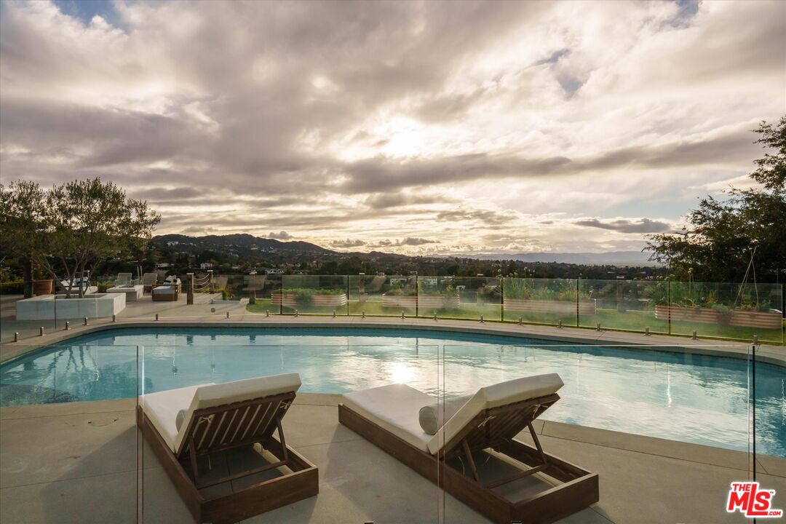
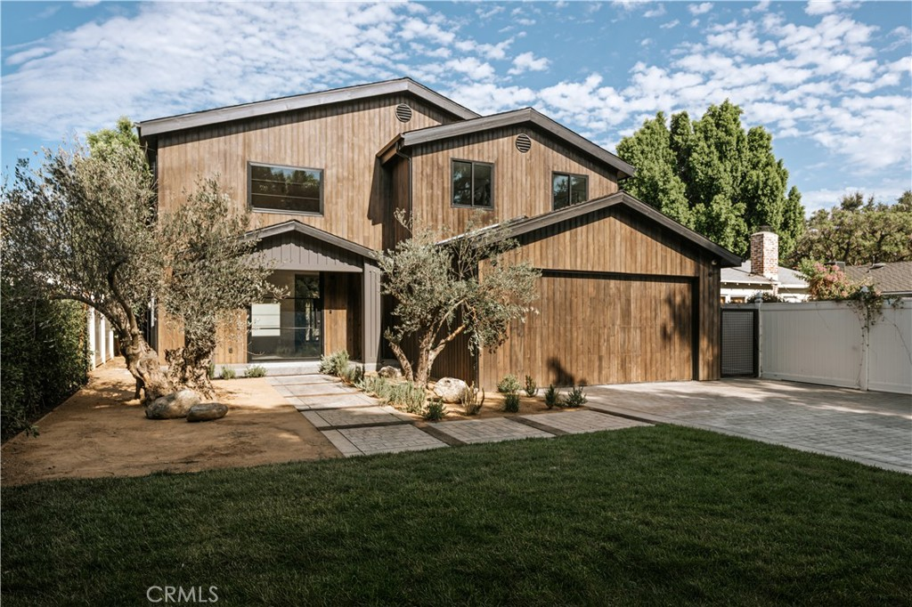

Sherman
Oaks

- Tuesday ritual
- Farmers market
- Walk Score
- 62 / 100
- Approx. area
- 9 square miles
- Established
- 1927
Market schedule and history via Westfield Fashion Square. Walkability via Walk Score. Neighborhood area and founding history via the Sherman Oaks Neighborhood Council.
What it actually feels like to live here.
Sherman Oaks is a neighborhood within the City of Los Angeles, set along the southern edge of the San Fernando Valley. Ventura Boulevard gives it restaurants, coffee shops, boutiques, and the useful places that make a neighborhood work; the streets behind it bring ranch houses, traditional homes, midcentury architecture, apartments, and quiet pockets in the hills.
I live in Sherman Oaks, and what I love is how naturally life comes together here. Families look out for each other. Neighbors share group texts, check in, and build real community. It feels easy without feeling disconnected.
The honest tradeoff is that it has less concentrated “scene” than Silver Lake, Los Feliz, Echo Park, or Frogtown. Its cool is quieter—and closer to the rest of Los Angeles than people assume.
Let me give you a tour2–6 PM · Westfield Fashion Square
Why Tuesdays are my favorite day here.
Every Tuesday afternoon, the Sherman Oaks Farmers Market takes over the parking lot behind Westfield Fashion Square. A mall parking lot should not be the place where a neighborhood reveals itself, but this one somehow is.
You go for produce, flowers, bread, maybe dinner. Then you run into someone from the neighborhood, stay longer than you meant to, and remember why Sherman Oaks feels different from the version people imagine from the other side of the hill.
That little Tuesday ritual is what I mean when I say life here feels easy. Community is not a slogan. It is built into the ordinary week.
Plan a Tuesday visitWhere in LA is Sherman Oaks?
Sherman Oaks sits north of the Santa Monica Mountains, between Studio City and Encino, with Van Nuys to the north and canyon routes leading south toward Beverly Hills, West Hollywood, and Hollywood.
The flatter streets and Ventura Boulevard feel more connected to daily errands and restaurants. South of Ventura, the neighborhood rises into foothills and canyons with more privacy, views, and winding roads.
Closer than it sounds: with clear roads, the drive from Coldwater Canyon to Chateau Marmont can take about 15 minutes. Actual travel time varies significantly by starting point, route, traffic, and road conditions.
Places I keep sending people to.
Places I secretly love too.

Crèma
A new Ventura Boulevard coffee-and-café stop with a bright room, an easy neighborhood pace, and a menu made for lingering.

Anajak Thai
A longtime family-run Sherman Oaks restaurant with one of the most distinctive dining experiences in Los Angeles.

Petit Trois Le Valley
French-brasserie energy, a marble bar, weekend brunch, and the kind of room that makes a neighborhood dinner feel like an occasion.

Sweet Butter Kitchen
An easy breakfast-and-lunch standby with a courtyard feel—the kind of place that quickly becomes part of a weekly routine.

Pizzana
Neo-Neapolitan pizza with a polished but family-friendly neighborhood rhythm on Ventura Boulevard.

Didar Kitchen
Homestyle Persian cooking, flame-kissed kebabs, saffron rice, and the warmth of a true neighborhood restaurant.

Taisho
A lively Japanese dining room on Ventura Boulevard for shared plates, robata, drinks, and a night that feels a little less suburban.
Schools in and around Sherman Oaks
Sherman Oaks Elementary CharterPublic · K–5 · 8/10
Kester Avenue Elementary / MagnetPublic · K–5 · 10/10
Louis Armstrong Middle SchoolPublic · 6–8 · 6/10
Van Nuys High SchoolPublic · 9–12 · 8/10
The Buckley SchoolPrivate · K–12 · Not rated
Notre Dame High SchoolPrivate · 9–12 · Not rated
Public-school ratings are current GreatSchools ratings as of August 2026 and may change. GreatSchools uses several measures of school quality; a rating is not the whole story. Assignments and program eligibility depend on the exact property address. Verify through the LAUSD School Directory.
Parks & outdoor time
Van Nuys–Sherman Oaks Recreation Center
A large neighborhood recreation hub for fields, courts, classes, playground time, and community programs.

Deervale–Stone Canyon Park
An approximately 79-acre regional nature park tucked into the hills, with trails, tree canopy, and Valley views.

Los Angeles River Greenway
Local stretches of the river greenway add walking paths and a quieter outdoor route close to the neighborhood.
Sherman Oaks homes that have made the case.

Obsession No. 003
3627 Cody Road
A restored 1956 post-and-beam with walls of glass, canyon views, and a baby blue LaCanche range.
See why it made the edit
Obsession No. 004
5114 Cedros Avenue
A quiet new build shaped around two old olive trees, with warm wood, dramatic marble, and a backyard made for actual use.
See why it made the editSherman Oaks on your mind? I’ve got you.
I’ll help you understand which part of the neighborhood fits the way you actually want to live.
Let’s start here